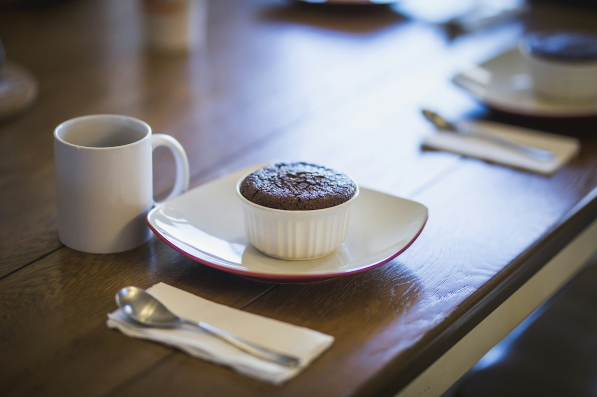

Chocolate Lava Mug Cake
A single-serve chocolate cake with a molten centre, mixed and microwaved in under five minutes.

The mug cake problem is texture: most come out rubbery and dry. The fix is a lower cook time than feels right, plus a square of chocolate pushed into the middle that melts into a genuine molten centre. Pull it while the top still looks slightly wet.
Ingredients
Quantities scale automatically. Cooking times stay the same.
Batter
Lava centre
To serve
Equipment
- Large microwave-safe mug (at least 350 ml)
- Fork
Method
-
1
Mix the dry ingredients
In a large mug, stir the flour, sugar, cocoa, baking powder and salt with a fork until evenly combined and no cocoa lumps remain.
-
2
Add the wet
Pour in the milk, oil and vanilla. Stir hard, scraping the bottom corners of the mug where dry flour always hides, until the batter is smooth.
-
3
Add the lava
Push the square of chocolate into the centre of the batter until it is just submerged. Do not stir it in.
-
4
Microwave short
Cook on full power for 60-75 seconds in an 800W microwave. Stop while the top still looks slightly wet and tacky in the middle.
-
5
Rest
Leave it for 60 seconds. The residual heat finishes the cake while the centre stays molten. This rest is part of the cooking.
-
6
Serve immediately
Dust with icing sugar and add ice cream. Eat straight from the mug while it is warm.
Cook’s tips
- Undercook it. Every extra ten seconds moves this from molten to rubbery, and there is no way back.
- Use a mug at least twice the volume of the batter, or it will climb over the rim.
- Microwaves vary a lot. Test at 60 seconds the first time and note what works for yours.
Variations
- Push in a spoonful of peanut butter or salted caramel instead of the chocolate square.
- Add a tablespoon of espresso powder to the dry mix to deepen the chocolate flavour.
- Make it vegan with plant milk and oil; the recipe contains no eggs already.
Storage and make-ahead
Made to be eaten immediately and does not keep. You can pre-mix the dry ingredients into jars for up to 3 months, then add the wet ingredients when you want one.
Nutrition per serving
| Calories | 486 kcal |
|---|---|
| Protein | 9 g |
| Carbohydrates | 62 g |
| Fat | 23 g |
| Fibre | 4 g |
| Sugar | 38 g |
| Sodium | 320 mg |
Nutrition is estimated from ingredient averages and will vary with brands and portioning.